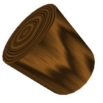
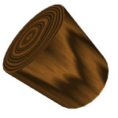

マテリアルタグ
オブジェクトブラウザでポリゴンオブジェクトにマテリアルをドラッグ・ドロップすると、マテリアルタグが自動的に作成されます。（訳注：現バージョンではマテリアルを3D ビュー上のポリゴンオブジェクトに直接ドラッグ・ドロップする事も可能です。）ポリゴンオブジェクト以外の他のオブジェクトにはマテリアルを適用する事はできません。マテリアルタグのアイコンは、使用したマテリアルの小さなプレビューを示しています。マテリアルブラウザで、マテリアルを削除した場合、すべてのマテリアルを参照しているマテリアルタグも削除されます。
マテリアルタグの設定でシェーディング空間は決定され、レンダラーに送られる前に UV 座標の最終変換が可能です。この UV 座標の最終変換は、特にパラメトリックポリゴンオブジェクトに付いている UV 座標を使う場合、便利でしょう。
メッシュに複数のマテリアルを使用する
メッシュごとに 16 個の違うマテリアルを割り当てる事が可能です。全体のメッシュからポリゴンの選択範囲のみにマテリアルを適用するには、ローポリゴンオブジェクト（ raw polygon object ）の別々のポリゴン選択セットを使用します。手順を説明していいる 例 3) を見てください。
注意: もし１つのポリゴンオブジェクトに１つ以上のマテリアルを適用している場合、オブジェクトブラウザに並んだ最も右のマテリアルタグがポリゴンのシェーディングに使用されます。例えば、もし５つのマテリアルタグを１つのメッシュ（ポリゴンオブジェクト）に適用していて、最後（一番右）のマテリアルタグの "ポリゴン選択セット" が "すべて" に設定されいた場合、すべてのポリゴンはこの最後のマテリアルタグのマテリアルを使ってシェーディングされます。
プロパティ
- シェーダスペース: オブジェクトがワールド座標系かオブジェクト座標系のどちらでシェーディングされるかを選択します。例 1) の図で２つのシェーディング空間の違いを見てください。
- ポリゴン選択セット: ポリゴン選択セットにマテリアルの適用を制限します。ポリゴンオブジェクトで設定されたポリゴン選択セットを使用します。
- オフセット: オフセット値で、シェーダスペースを移動します。
- 回転: 回転値で、シェーダスペースを回転します。
- 拡大縮小: 拡大縮小値で、シェーダスペースを拡大・縮小します
- UV オフセット: レンダラーに送られる前に、オフセットを UV 座標に追加します。
- UV 回転: レンダラーに送られる前に、回転を UV 座標に追加します。
- UV 拡大縮小: レンダラーに送られる前に、拡大縮小を UV 座標に追加します。
（訳注：プロパティの オフセット・回転・拡大縮小 と UV オフセット・UV 回転・UV 拡大縮小 の違いに注意してください。前者は Wood や Marble などプロシージャルに模様を生成するマテリアルに対応し、後者は Material 等のテクスチャを適用できるマテリアルに、それぞれ対応します。また UV オフセット・UV 回転・UV 拡大縮小 は UV 座標の２次元の移動変形である事にも注意が必要です。）
例 1)
この例では、"Wood" マテリアルを適用した回転した幹（オブジェクト）を見る事ができます。ワールドスペースでシェーディングしている場合、 "Wood" マテリアルは、木の幹が地球に垂直に立っているように計算されます。この振る舞いはあまり望まれないでしょう。オブジェクトスペースで幹（オブジェクト）をシェーディングした場合、シェーダスペースは幹で（の座標系に従って）回転させられるので、望む振る舞いを得る事になります。
シェーダスペースは、オフセット・回転・拡大縮小 プロパティで直接修正する事も可能です。
 

ワールド スペース オブジェクト スペース
例 2)
この例では、ポリゴン選択セットにマテリアルを適用する方法を順に説明しています。
-
- 球体オブジェクトを作成し、"編集可能にする" を実行します。
- そのポリゴンオブジェクト のプロパティのポリゴン選択セット を 1 に設定します。
- いくつかのポリゴンを選択します。
- ポリゴンオブジェクト のプロパティのポリゴン選択セット を 0 に戻します。ポリゴン選択セット 1 に先ほどのポリゴン選択範囲が保存されるように、これを行います。
- 青いマテリアルをポリゴンオブジェクト に適用します。オブジェクト全体は青になります。
- オブジェクトブラウザの（先ほど適用した）マテリアルタグをクリックし、マテリアルタグのプロパティを表示させます。
- マテリアルタグのプロパティの "ポリゴン選択セット" を 1 に設定します。これで、マテリアルの適用範囲はポリゴンオブジェクトのポリゴン選択セット 1 の選択セットに制限されます。